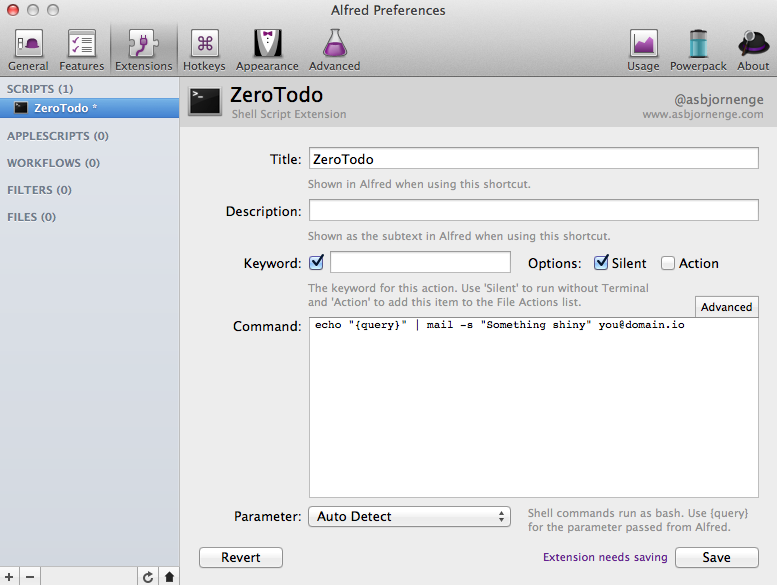
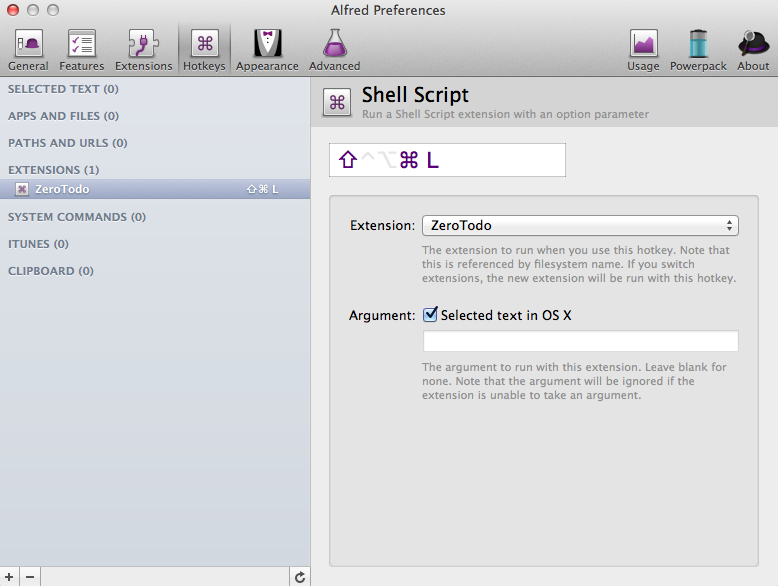

Zero Todo
Todo workflow for inbox zeroists.
I'm an inbox zeroist; my inbox is my todo list.
For us (well, for me at least) todo applications quikly get neglected. I love their shiny UI's and impressive and thought out UX, but the fact remains that the tasks I so optimistically punch in never get done. I've tried numerous approaches. My read-later services are filled to the brim by awesomeness that will never get parsed by anyone but @marcoarment's robots.
I always return to my inbox, so whatever gets in there gets action.
The following is an attempt to simplify adding "tasks" to my inbox.
Postfix
Get your local postfix relaying to a proper smtp server. I followed this guide for gmail. Be sure to also add the following to /etc/postfix/main.cf.
smtp_sasl_security_options = noanonymous
Now you can send emails from your shell.
df -h | mail -s "Disk usage" you@domain.io
Hotkey
There are multiple ways to have a hotkey execute a script. I choose Alfred because I like Alfred and because it has support for passing any selected text as an argument to the script.
Add your extension. It might be a good idea to click Advanced and configure escaping. Mail seems to handle all these chars nicely, so I just unchecked it all.

Add a hotkey for that extension and check "Selected text in OS X".

An thats it, you can now select any text in osx and stack it on top of your inbox by pressing your specified hotkey.